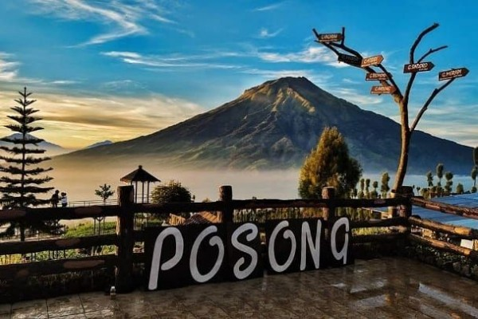
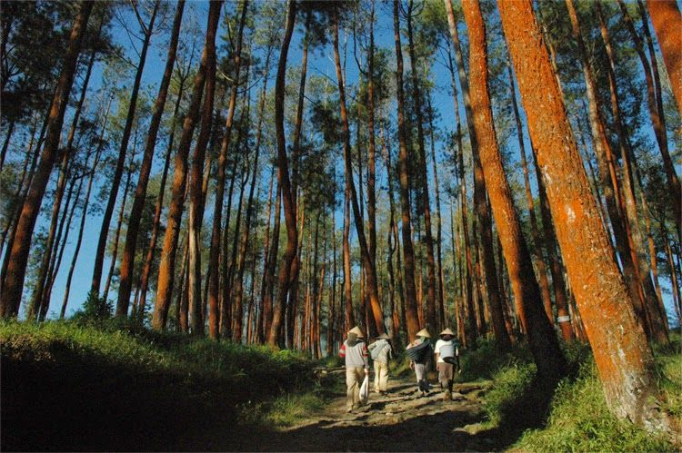
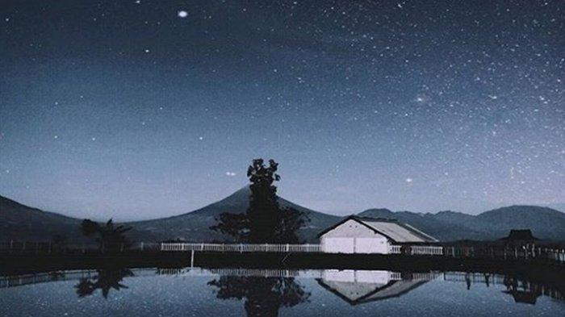
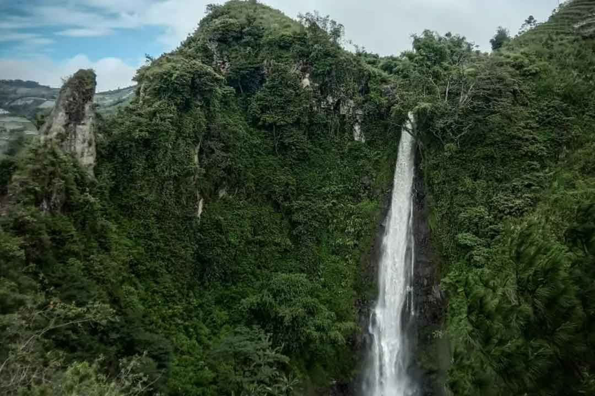
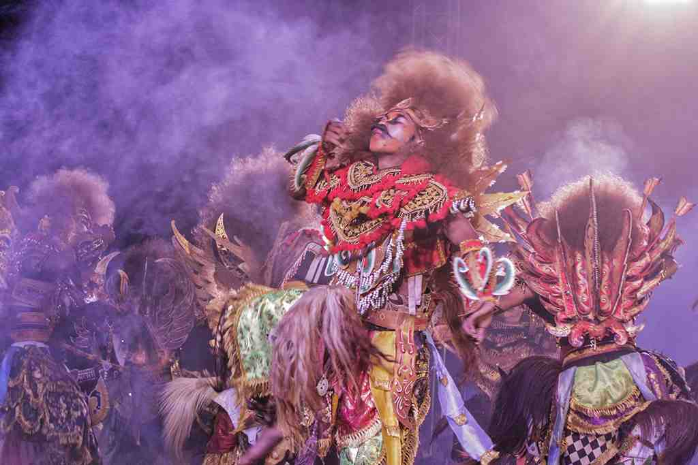

Sejarah
Sejarah Temanggung selalu dikaitkan dengan raja Mataram Kuno yang
bernama Rakai Pikatan. Nama "Pikatan" sendiri dipakai untuk
menyebutkan suatu wilayah yang berada pada sumber mata air di desa
Mudal Kecamatan Temanggung. Di sini terdapat peninggalan berupa
reruntuhan batu-bebatuan kuno yang diyakini petilasan raja Rakai
Pikatan. Sejarah Temanggung asal mulai tercatat pada Prasasti Wanua
Tengah III Tahun 908 Masehi yang ditemukan penduduk dusun Dunglo
Desa Gandulan Kecamatan Kaloran, Temanggung pada bulan November
1983. Prasasti itu menggambarkan bahwa Temanggung semula berupa
wilayah kademangan yang gemah ripah loh jinawi di mana salah satu
wilayahnya yaitu Pikatan.
Geografis
Sebagian besar wilayah Kabupaten Temanggung merupakan dataran tinggi
dan pegunungan, yakni bagian dari rangkaian Dataran Tinggi Dieng. Di
perbatasan dengan Kabupaten Wonosobo terdapat Gunung Sindoro dan
Gunung Sumbing. Temanggung berada di jalan provinsi yang
menghubungkan Semarang-Purwokerto. Jalan Raya Parakan-Weleri
menghubungkan Temanggung dengan jalur pantura. Untuk daerah yang
berbatasan dengan Kabupaten Semarang persisnya di Kecamatan
Pringsurat, dilalui oleh jalan nasional yang menghubungkan
Semarang-Yogyakarta.
Wisata
1. Wisata Alam Posong

Berada di kaki gunung Sindoro, Posong menyajikan 7 keindahan
gunung sekaligus. Gunung-gunung ini adalah Gunung Sindoro, Gunung
Sumbing, Gunung Merbabu, Gunung Ungaran, Gunung Muria, Gunung
Merapi dan Gunung Telomulyo. Nama posong berasal dari kata "pos"
dan "kosong" yang sengaja dibuat oleh Pangeran Diponegoro pada
zaman penjajahan untuk memancing pihak Belanda melakukan
penyerangan di pos yang ternyata kosong. Kini wilayah Posong telah
menjelma menjadi destinasi wisata Temanggung pegunungan yang tak
pernah sepi pengunjung. Posong berada di Desa Tlahap, kecamatan
Kedung, Temanggung dengan ketinggian sekitar 2.000 mdpl. Wisata
alam Posong juga cocok dijadikan sebagai tempat untuk berekreasi
bersama keluarga, berkemah bersama teman-teman, atau sekadar
melepas penat.
2. Jumprit

Jumprit adalah wisata Temanggung berupa mata air dan hulu Sungai
Progo yang diyakini sebagai petilasan pada zaman majapahit.
Jumprit juga merupakan tempat pengambilan air suci untuk upacara
Waisak yang diadakan di Borobudur. Setiap tahun, para pemeluk
agama Buddha dari berbagai tempat dan negara datang ke Jumprit
untuk mengambil air suci. Tempat ini menjadi ramai tiap menjelang
bulan purnama di bulan Mei. Jumprit terletak di Kecamatan
Ngadirejo, 26 km dari Kota Temanggung, Jawa Tengah. Udara di
tempat ini sangat sejuk dan airnya menyegarkan. Tempat ini juga
sudah dikelola sebagai wana wisata oleh Perum Perhutani KPH Kedu
Utara. Di kawasan petilasan dan sendang ini, terdapat ratusan
monyet ekor panjang, yang dipercaya sebagai keturunan dari Ki
Dipo, yakni monyet peliharaan Pangeran Singonegoro yang bisa
berbahasa manusia.
3. Embung Kledung
Embung Kledung merupakan waduk buatan yang diapit oleh gunung
Sindoro dan gunung Sumbing. Embung ini didirikan di bekas lahan
tembakau dan mempunyai luas sekitar 83x83 meter. Wisata Temanggung
ini berfungsi untuk menyimpan cadangan air guna kepentingan
pengairan perkebunan yang ada di Kledung dan sekitarnya. Tidak
hanya berfungsi sebagai pengairan, danau berbentuk persegi dengan
panjang tiap sisinya mencapai 83 meter dengan kedalaman air tiga
meter ini juga menjadi tempat wisata. Di sekitar Embung Kledung
kamu juga bisa menikmati hamparan aneka kebun teh, tembakau,
kentang, wortel, strawberry, tomat, dan sayur mayur lainnya.
4. Embung Tlogopucang

Wisata Temanggung berikutnya adalah Embung Tlogopucang. Daya tarik
Embung satu ini adalah panorama alam yang indah, dipadu dengan
beragam spot yang kekinian. Hampir sama dengan Embung Kledung, di
Embung Tlogopucang kamu bisa melakukan aktivitas camping. Lokasi
dan alamat Embung Tlogopucang berada di Desa Tlogopucang,
Kecamatan Kandang, Kabupaten Temanggung, Provinsi Jawa Tengah.
5. Curug Surodipo

Curug Surodipo diapit oleh beberapa tebing yang kehijauan
mengalirkan air dari ketinggian sekitar 120 meter. Wisata
Temanggung ini terletak di Desa Tawangsari Kecamatan Wonoboyo.
Curug Surodipo juga sering disebut dengan curug Trocoh karena air
terjun ini berhenti mengalirkan air, bahkan ketika musim kemarau
panjang. Curug Surodipo ini juga merupakan air terjun tertinggi
yang ada di Temanggung.
Kesenian
1. Kuda Lumping

Kalau kamu tidak pernah mendengar kata Jaran Kepang, apa kamu
familiar dengan kata Kuda Lumping? Di Temanggung, kuda lumping
disebut juga sebagai Jaran Kepang. Properti yang digunakan dalam
pertunjukannya menggambarkan karakter yang menyerupai bentuk kuda.
Dahulu, Jaran Kepang bukanlah sebuah seni pertunjukan. Jaran
Kepang sendiri merupakan bagian dari ritual menolak bala,
mengatasi berbagai musibah, meminta kesuburan pada lahan
pertanian, mengharap keberhasilan panen, dan juga supaya
masyarakat aman dan tenteram. Karena sejarah Jaran Kepang
tersebut, tak heran jika masyarakat sering mengaitkan tradisi ini
dengan hal-hal magis. Kabarnya, ada unsur “klenik” dalam
pelaksanaannya. Bagaimana tidak, budaya ini akrab dengan
kepercayaan animisme para leluhur. Oleh karena itu, Jaran Kepang
sering diselenggarakan dalam bentuk upacara-upacara ritual
pemujaan. Namun, Jaran Kepang kini memiliki banyak versi. Salah
satunya, versi kolaborasi budaya Bali. Unsur seni tari Bali bisa
terlihat dari kostum yang digunakan para penari Jaran Kepang,
gerakan tarian, dan riasan penarinya. Selain itu, unsur cerita
yang dibawakan pun melibatkan Rangda, ratu dari para leak dalam
mitologi Bali. Sejumlah penari menunjukkan gerakan tarian seperti
menunggang kuda. Oleh karena itulah direbut Jaran yang dalam
Bahasa Jawa berarti kuda.
2. Warokan
Warokan merupakan budaya khas Temanggung dalam bentuk tarian.
Gerakan tariannya menggambarkan seorang yang gagah perkasa dan
berwatak pantang menyerah. Para penari Warokan bisa dari kalangan
laki-laki dewasa atau anak-anak. Mereka akan dihias sedemikian
rupa sehingga mencerminkan kegarangan prajurit garis depan. Selain
itu, kostum yang digunakan adalah kain batik atau disebut Jarit.
Tak lupa juga membawa peralatan menari seperti cemeti.
3. Kubro Siswo

Kubro Siswo merupakan tarian dengan memakai topeng dan diikuti
dengan alat musik pukul. Kubro Siswo disebut-sebut sebagai
representasi dari olahraga. Pasalnya, kesenian yang satu ini
seolah mengajak masyarakat untuk gemar berolahraga. Tak heran
kalau gerakan tarian Kubro Siswo itu enerjik dan cepat. Inilah
yang membedakan tarian Kubro Siswo dengan tarian lain dari
Temanggung. Walaupun begitu, ada tatanan tarian yang harus
diikuti. Gerakannya harus seragam antara pemain satu dengan pemain
yang lainnya. Ini menuntut kekompakan.